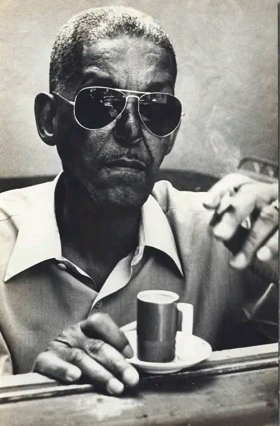
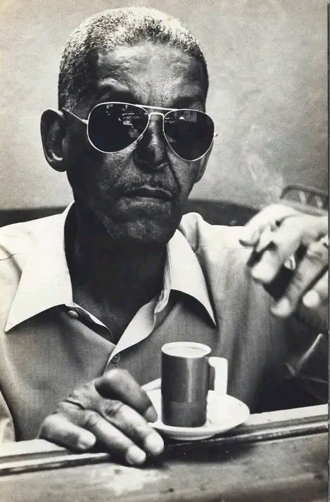

Biografia
Cartola, nome artístico de Angenor de Oliveira, foi um dos maiores compositores e intérpretes da música brasileira, especialmente do samba. Nascido em 11 de outubro de 1908, no Rio de Janeiro, e falecido em 30 de novembro de 1980, Cartola é considerado uma das figuras mais importantes da música popular brasileira, sendo um ícone do samba e uma referência para gerações de músicos e admiradores.
Cartola começou sua carreira na década de 1930 e fez parte da geração de músicos que ajudou a consolidar o samba como gênero central da música brasileira. Sua obra, marcada pela melancolia, lirismo e simplicidade, reflete as nuances da vida cotidiana, das dificuldades sociais e das alegrias e tristezas do povo. Ele é especialmente conhecido por suas composições que retratam a beleza e a dor do samba, sendo considerado um dos maiores poetas da música popular brasileira.
Embora tenha tido uma carreira marcada por dificuldades financeiras e pessoais, Cartola produziu algumas das mais belas canções da história do samba. Entre suas obras mais conhecidas estão "O Mundo é um Moinho", "As Rosas Não Falam", e "Preciso Me Encontrar". Essas músicas são verdadeiros hinos do samba, e sua interpretação emocionante e autêntica continuam a tocar o coração de todos que as ouvem.
Cartola, ao longo de sua vida, enfrentou várias dificuldades, incluindo a pobreza e a marginalização social, que marcaram sua trajetória. Durante algum tempo, ele trabalhou como operário e passou por momentos difíceis, vivendo em condições precárias. Mesmo assim, sua música nunca deixou de refletir uma beleza singular e uma profunda sensibilidade.
O nome Cartola foi escolhido porque ele usava um chapéu de cartola, símbolo do estilo elegante e distinto que ele cultivava, mesmo em tempos de dificuldades. Seu estilo e sua musicalidade cativaram públicos de todas as classes sociais, e ele se tornou um dos maiores expoentes do samba carioca.
 
